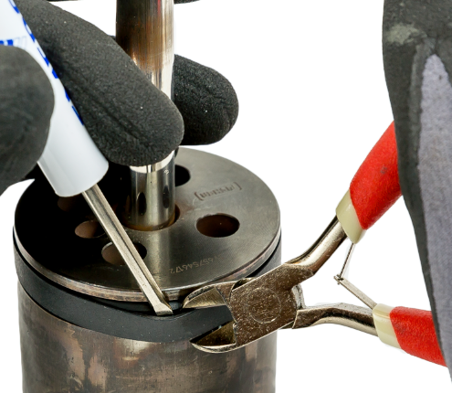
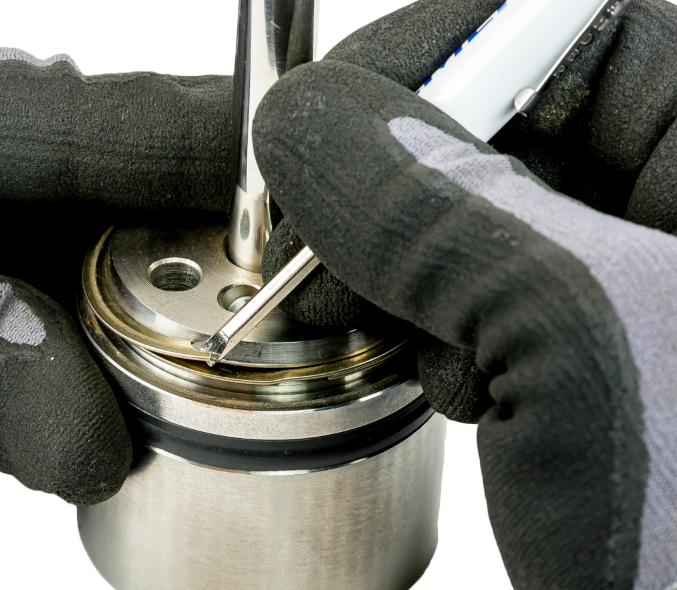

ch2 pass: table + photos; 58+59+60+61 consolidated
Replacing the Piston Seal
| Seal | Off the old | On the new |
|---|---|---|
| Graphite ring (ED) | lifts out in two pieces | snap a new whole ring into halves in a smooth-jaw vise; match the broken ends |
| Two-piece PTFE (ET) | closed ring — cut it off | backup ring first, then stretch the seal on slowly so the PTFE cold-flows |
| Spring-loaded PTFE (ET) | small plugs: work the clip off; large: cut it off | the open (spring) side faces the flow direction |


